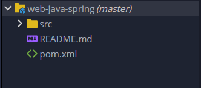
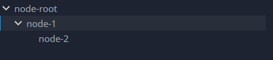

Manage tree in Eclipse Che
The tree structure is very a popular choice every time that is necessary represent something that have a specific hierarchy between its elements.
A project structure, a JSON representation of a REST call can be managed using the tree structure in a multi-level hierarchy.
Eclipse Che provides out of the box a complex structure called SimpleTree that can be used to create plugins that represent some data into a tree visualization (as Che already defined with the explorer widget).

Just to understand how this class provides the hierarchy will be defined a simple case relative to a tree with a root and three depth length, as reported below.

The simple node structure
Basically each element of our tree is a custom object defined with a set of attributes. In facts at this object (that extends the Node interface) is possible attach a custom icon, a text, a html selector and so on.
`Java
public class SimpleNode extends AbstractTreeNode implements HasNewPresentation {
private NewNodePresentation.Builder nodePresentationBuilder;
private NewNodePresentation newNodePresentation;
private final String name; private boolean leaf; ...
The abstract class AbstractTreeNode guarantees that the new node will be managed properly as node of a tree by the framework.
But is necessary provide the override implementation of these methods:
```Java```
@Override
public String getName() {
...
}
@Override
public boolean isLeaf() {
...
}
@Override
protected Promise<List<Node>> getChildrenImpl() {
...
}
In particular the last method is very interesting: it is called by the framework so the developer don't need to call it and it ask for the right implementation of the node (if it is a root with at least one parent there will a specific svg icon on the left).
On the other hand this custom class also implements the interface HasNewPresentation that provides methods to define the graphic behavior of the node. Is necessary provide the implementations of the method getPresentation()
Java
@Override
public NewNodePresentation getPresentation() {
...
}
## More in deep discussion about SimpleNode class
In order to create a node correctly is necessary as first thing define a name, and this could be archived with a parametric constructor or whit a setName method. The attribute name that are defined will be passed into the process that generate graphically the node. It will be discussed later.
Another very important method is isLeaf: it accepts a boolean value, it should be defined as true if the node that will be created don't have any children (and in this case it will not have the specific svg icon).
```Java```
@Override
public boolean isLeaf() {
return leaf;
}
But the most important concept is understand that a node could be a root with (or without a child) or could be a child for a specific parent. In these cases the graphical representation will change. The abstract node class provide both a list of nodes and a parent node with the relative getter/setter that can be used to attach the new node created into the tree hierarchy. However in order to investigate about the list of children that could be defined for a selected parent is necessary implement the getChildrenImpl() as defined below:
Java
@SuppressWarnings("deprecation")
@Override
protected Promise
For the presentation, basically is necessary implements the method getPresentation() using the inner class Builder provided by the class NewNodePresentation:
```Java```
@Override
public NewNodePresentation getPresentation() {
nodePresentationBuilder = new NewNodePresentation.Builder();
this.setNewNodePresentation(nodePresentationBuilder.withNodeText(this.getName()).build());
return this.getNewNodePresentation;
}
The full code of SimpleNode class is defined here [GIST]
Load the nodes in the tree
Now that the node element is defined, is only necessary initialize the tree structure and add the nodes inside of it. The tree object can be defined both into a dialog or into a panel, it doesn't matter (see the full code for more references). First of all is necessary create the nodes, passing their names in the class constructor. After that is necessary define the relations between the nodes and decide who are the leafs, as reported below:
Java
SimpleNode node0 = new SimpleNode("node-root");
SimpleNode node1 = new SimpleNode("node-1");
SimpleNode node2 = new SimpleNode("node-2");
node0.setLeaf(false); node1.setLeaf(false); node2.setLeaf(true);
node1.setParent(node0); node2.setParent(node1);
List
List
Now it's possible create the tree object, that requires an instance of NodeStorage and NodeLoader that are define out of the box:
```Java```
NodeStorage nodeStorage = new NodeStorage();
NodeLoader nodeLoader = new NodeLoader();
treeHierarchy = new Tree(nodeStorage, nodeLoader);
nodeStorage.add(node0);
The add() method is necessary in order to create the root of the tree: for the other children of the root is not necessary call the add method because they are already defined in the children list in the SimpleNode instance and it will be retrieved during the rendering operation performed by Che. The full code about this implementation is here [GIST]